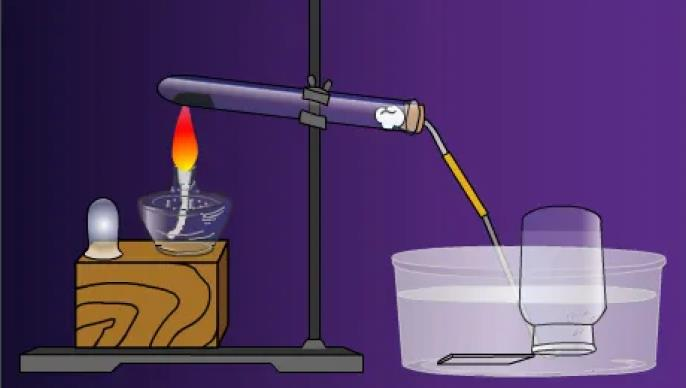
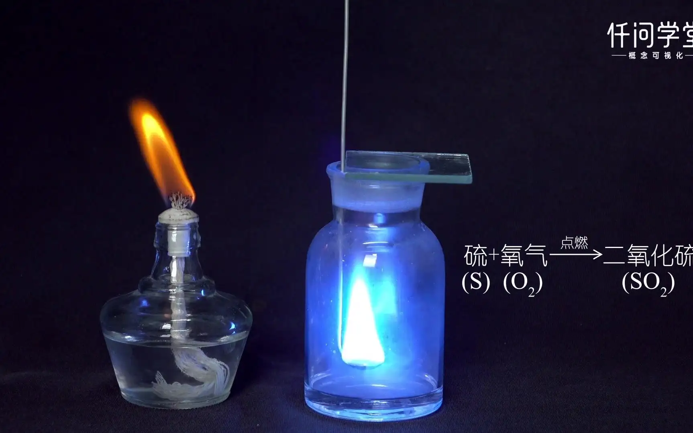
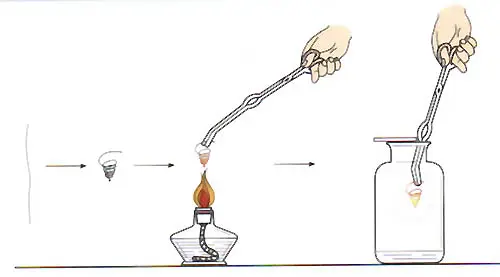

Oxygen production by potassium permanganate

Chemical equation of potassium permanganate for oxygen production: 2KMnO=heating=KMnO+MnO+O ↑; The written expression for preparing oxygen from potassium permanganate: potassium permanganate → (heating) potassium manganate+manganese dioxide+oxygen. Potassium permanganate can produce oxygen, but potassium permanganate does not react with oxygen because they are both oxidants and cannot react.
I really like this experiment! - 2
Potassium permanganate can only be used for external use. It is a strong oxidant and has the effect of killing bacteria and fungi. Potassium permanganate has convergence effect at low concentration and corrosion effect at high concentration. It must be configured in strict accordance with the specified concentration.
Charcoal burns in oxygen
The phenomenon of charcoal burning in oxygen is that charcoal can burn violently in oxygen, emit dazzling white light, release a lot of heat, and generate gas that makes clear lime water turbid.
Solids.
The chemical property is relatively active. Under certain conditions, it can react with a variety of substances and release heat at the same time; It has combustion supporting and oxidizing properties, provides oxygen in chemical reactions, and is a commonly used oxidant.
Sulfur burns in oxygen

Generally, elemental sulfur is yellow crystal, also called sulfur. There are many kinds of allotropes of sulfur, including rhombic sulfur, monoclinic sulfur and elastic sulfur. Sulfur exists in nature in the form of sulfide, sulfate or simple substance. Sulfur is an important element of protein in human body, which is of great significance to human life activities. Sulfur is mainly used in the production of fertilizers, gunpowder, lubricants, pesticides and antifungal agents. Sulfur is insoluble in water, slightly soluble in ethanol, and easily soluble in carbon disulfide.
Sulfur and sulfur dioxide (S+02=ignition=S2) generated from the combustion of sulfur bearing ores combine with water in the air to form industrial sulfuric acid, and sulfite reacts with oxygen in the air to generate sulfuric acid, thus causing sulfuric acid rain.
The wire burns in oxygen

Bend a piece of fine stainless iron wire into a spiral, and tie a piece of match stem tightly at one end. Light the match stick and immediately put it into the gas collecting bottle containing oxygen (the bottle contains a small amount of water to prevent it from bursting). Iron (Fe) burns violently in oxygen, sparking all around After the combustion stops, it can be seen that there are dark brown solids in the water at the bottle wall and bottom. The dark brown solids generated during the reaction are called ferric oxide (Fe3O4). This reaction can be expressed by the following chemical equation:.
Washing of instruments
1. Washing method: first pour the waste liquid in the test tube into the waste liquid tank, then inject 1/2 of the volume of the test tube with water, shake and then pour out the water, so as to wash several times continuously. If the inner wall is attached with substances that are not easy to wash off, use a tube brush to wash.
2. Test tube brush: The test tube brush must be rotated or moved up and down during brushing, but the force should not be too strong to prevent the test tube from being damaged.
3. Standards for cleaning the instrument: When the water attached to the inner wall of the washed glass instrument neither gathers into drops nor flows down in streams, it means that the instrument has been cleaned.
4. After the instrument is washed, it can not be placed disorderly, but should be inserted upside down on the test tube rack to dry.
5. Special circumstances
N If there is grease in the glassware, first wash it with hot soda ash solution or washing powder, and then rinse it with water.
N If the glass instrument is attached with alkali, alkaline oxide and carbonate that are difficult to dissolve in water, first dissolve them with dilute hydrochloric acid, and then rinse them with water.
Separation of Pigment from Spinach Leaves
Objective To understand the methods of separation and purification of natural substances through the extraction and separation of green plant pigments. ☆ Deeply understand the principle of chromatographic separation and identification of trace organic substances through thin layer chromatographic separation.